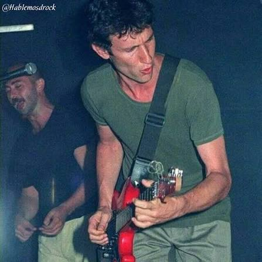
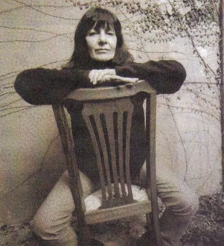

1984 - 1987
Saxo
Willy Crook
Responsable del saxo oscuro e inconfundible de Oktubre. Posteriormente se uniría a Los Abuelos de la Nada.
Originarios de La Plata en 1976 y descendientes directos de la cultura under local (con raíces en La Cofradía de la Flor Solar), Los Redondos en un principio no tenían integrantes fijos y hasta 15 músicos se alternaban en los instrumentos. Sin embargo, la estructura de la banda siempre estuvo centrada en una tríada inamovible.
Cantante, letrista y rostro visible de Patricio Rey. Su poética hermética, sus críticas sociológicas y su particular registro vocal (incluyendo sus característicos falsetes) se convirtieron en la voz de toda una generación. Luego de la disolución de la banda, inició una masiva carrera solista junto a Los Fundamentalistas del Aire Acondicionado.

El corazón musical de la banda. Skay aportó el sonido distintivo del grupo, fusionando el rock clásico, el blues, los ritmos de medio oriente y el post-punk. Es el creador de riffs históricos (como el célebre fraseo de "Jijiji"). Tras la separación, lanzó su etapa solista acompañado por Los Fakires.

La estratega del proyecto y figura maternal del grupo. Poli fue la encargada de mantener la más estricta independencia discográfica, organizando los shows, gestionando las producciones y defendiendo a la banda de la maquinaria de las grandes productoras y discográficas.

Aunque en los primeros años el grupo tuvo una rotación constante, para finales de los años 80 se consolidó la base rítmica y de vientos que acompañaría al Indio y a Skay hasta el último show.
Ingresó al grupo a principios de los 80. Su bajo proporcionó el groove pesado y el swing característico de los Redondos. También contribuyó en el arte y las gráficas del grupo a lo largo de los años.
Se sumó a la banda a comienzos de 1988 reemplazando al "Piojo" Ávalos. Su estilo preciso y potente detrás de los parches fue una pieza clave para consolidar el sonido masivo del grupo durante la etapa de los estadios.
Ingresó tras la partida de Willy Crook en noviembre de 1987. Aportó los arreglos de saxofón icónicos de los años 90 y amplió la paleta sonora tocando la armónica y los teclados.
Durante la época de los pubs y la grabación de los dos primeros discos (Gulp! y Oktubre), otros músicos dejaron una huella imborrable en el sonido de Patricio Rey:
Saxo
Responsable del saxo oscuro e inconfundible de Oktubre. Posteriormente se uniría a Los Abuelos de la Nada.
Guitarra
Formó un tándem de guitarras excepcional con Skay en los primeros años. Venía de tocar en la Hurlingham Reggae Band.
Batería
Grabó las baterías de los dos primeros álbumes de la banda.
Exintegrante y músico invitado que grabó arreglos clave en Gulp!.